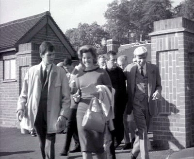
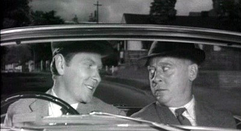
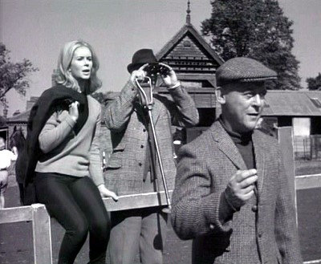
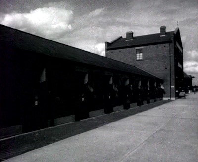
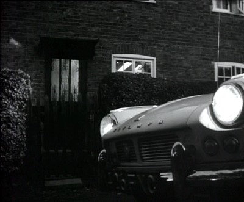
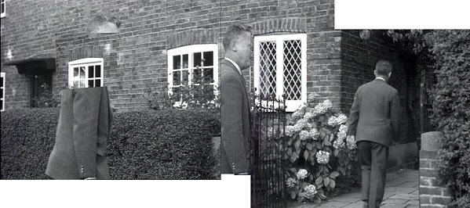
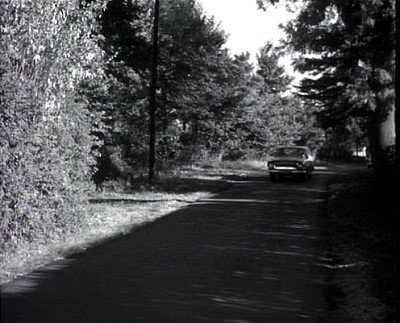

|
|
HELP FIND THE FOLLOWING LOCATIONS
PAGE 91
GIDEON’S WAY: The Big Fix (James Hill: September 1964)


Commander
Gideon (John Gregson)
and Bill Campbell (Robert Brown) go to visit


Unknown2- Jimmy Watson (Griffith Davies) leaves the racecourse stables early. He is intercepted by Dandy Johnson (Brian Phelan) who quizzes him about not fixing the race.

Confirmed by Stephen
Carter.

Lots Road Power Station,


(Identified by Alan Field, August 2007)


The Mops and Brooms – George (??) drops Jo Short (Michel Ripper) off at
The King’s Head after the race. He is looking for information about the race at

Unknown 5 – After Jo Short leaves the Kings Head and is he is
offered a lift home by Dandy Johnson. Dandy offers Short two hundred pounds to
make sure the horse



Aldbourne, Wiltshire – Horses leave the stables and cross the village green on their way to the gallops.


Unknown 6 - Colonel Aleck Middleton (Maurice Hedley), Janet
Middleton (Penelope Horner) and Jo Short (Michael Ripper), watch



Unknown 7- Posing as a friend of Janet Middleton (Penelope Horner), Detective Inspector David Keen (Alexander Davion) arrives at the Middleton residence.


Brookshill Farm / Dairy
Cottage / Farm Cottage / Bridle Cottage, Brookshill Drive, Harrow Weald- Posing as a
friend of Janet Middleton (Penelope Horner), Detective Inspector David Keen
(Alexander Davion)
is shown around the stables. He is introduced to Jo Short (Michael Ripper).
Dandy Johnson (Brian Phelan) watches the stable and is waiting when Hilarion is
delivered.
(Identified by Alan Field, June 2008)


 Alan Field – “pictures 1-3, the white wall and the
cottage on the other side of the gateway were seen ten years earlier, from a
different angle, in THE BELLES OF ST TRINIANS. The scene where Sgt Gates escapes from St Trinians on what she thinks is the
stolen racehorse only to find it's the milkman's horse, which heads straight
back to the dairy. Two other shots in that sequence were filmed near Ware in
Hertfordshire, which could place that building in the same area.”
Alan Field – “pictures 1-3, the white wall and the
cottage on the other side of the gateway were seen ten years earlier, from a
different angle, in THE BELLES OF ST TRINIANS. The scene where Sgt Gates escapes from St Trinians on what she thinks is the
stolen racehorse only to find it's the milkman's horse, which heads straight
back to the dairy. Two other shots in that sequence were filmed near Ware in
Hertfordshire, which could place that building in the same area.”
Unknown 9 - Late at night at the Middleton stables Keen and Janet wait in Hilarion’s stall watching for signs of doping.

Unknown 10 – Jo Shorts cottage ‘near the Middleton place. Jo Short (Michel Ripper) is dropped off at his home by Dandy Johnson (Brian Phelan) after offering him money to dope a favourite. After the doping of Hilarion goes wrong Janet Middleton (Penelope Horner) helps Jo and his family including Mable Short (Margery Mason) and Alice Short (Sandra Payne) by driving them to safety. Jo is forced to run for his life when Dandy Johnson and his thugs arrive.


 
Epson Racecourse, Berkshire - The


Think you know a spot? Need a bigger image? Email me.
< Previous | Index | Avengerland | Next >
Copyright © 2003 Anthony R. McKay